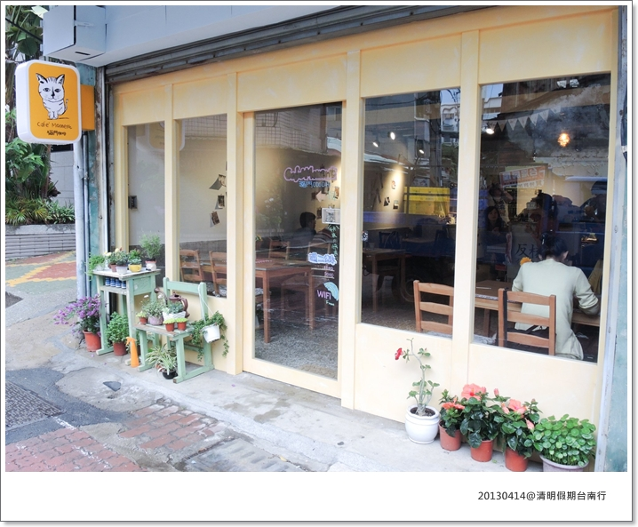
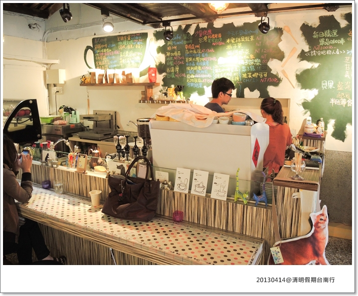
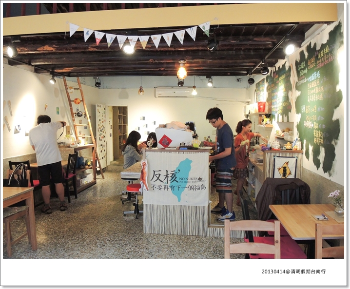

清明假期我們又跑去台南玩了一趟，要把上次228沒吃到的小吃全部補齊
但最近發現，我的記性真的好差啊～～～
拖到現在回來看照片，景點順序完全想不起來了 XD
想寫篇小吃篇內容也好空泛.......（只顧吃，沒拍照）
噗～噗！只好流水帳有什麼寫什麼了！
在民宿躲雨的二頭基 
因為下雨，所以臨時決定去民宿附近的 貓門 Cafe' Moment 下午茶
這裡的老闆跟老闆娘可是2012拉花比賽的亞軍＆季軍

吧台後方的黑板菜單
上頭有項寫著“梅子拔樂“，不知為什麼我一直搞成“可樂拔樂“...........
因為太好奇了，還跑去櫃台跟老闆詢問，想點（智障啊我）XD

台南的老房子真的好有味道，怪不得很多人都想來這裡開間小店
雖然店小小，但室內空間其實還蠻大的，很舒服

既然叫貓門，店內當然少不了貓咪的擺設
餐點自已寫在小紙條上送去
看到Nikon大砲就猜的出這誰寫的字吧！？
卡內拔的字是不是真的是很漂亮，好秀氣.....跟他的手指頭一樣，好娘 XDDDDD
冰、熱摩卡

頗受好評的提拉米蘇，還不賴吃！是大人的口味
回來看到FB才發現，可愛的貓湯匙店內好像也有在賣
午後悠閒時光，多虧這場雨讓我飽到快吐的肚子有喘息的時間
塗鴨留言，幫雙卡寶貝留下足跡
謝謝店家對寵物友善，願意讓小狗一起入內餐
如果要帶寵物請事先告知店家，並遵守應該有的禮貌哦！
貓門 Cafe' Moment
地址：台南市中西區忠孝街93巷34號
電話：06-2236858
＝＝＝＝＝＝＝＝＝＝＝＝＝＝＝＝＝ 成大校園 ＝＝＝＝＝＝＝＝＝＝＝
沒下雨帶卡卡跟卡ㄋㄟ到成大光復校區晃晃，看看百年老榕樹
還巧遇了兩次的台南柯基幫？XD
看我兒子被拉這麼遠就知道.....媽媽又瞄人家的下半身了 XDDD
為了怕卡“萌“犬變身卡“猛“犬，大家還是保持距離以測安全啦！
百年老榕樹真的好大，好茂密
更巧的是還到台北的朋友，世界真是小！！
另一個角度老榕樹
這次台南行最大收獲呢？
就是卡卡乾爹乾媽入手！！！！賀哦～～
這一切怎麼發生的我也忘了....總之回過神就多了個爹跟媽 XD
要說台南通，我們卡乾媽豆皮麻絕對是數一數二的厲害！
說出口的每間店她都知道，去過也吃過，到景點還可以幫忙做導覽，超強的！！
謝謝乾爹乾媽這次的招待，回來量體重也實際帶回了你們的熱情......
（才去3天紮實肥了1kg....夭壽 )
)
阿卡卡這乾兒子他們也愛的不得了，所以後面幾乎都把小傢伙丟給他們玩，哈哈哈
看過卡卡的朋友都知道，他本尊實在是“糾觸咪“
讓小傢伙們隨便跑幾下又要去吃飯了
我們在台南的間期，停下來就在吃，吃的當中就馬上討論下一個吃什麼，沒有餓過的感覺超恐怖！
卡卡大概很羨慕老木我隨時都可以吃東西
但老木我也很羨慕你有人幫你控制飲食，保持好身材啊～～